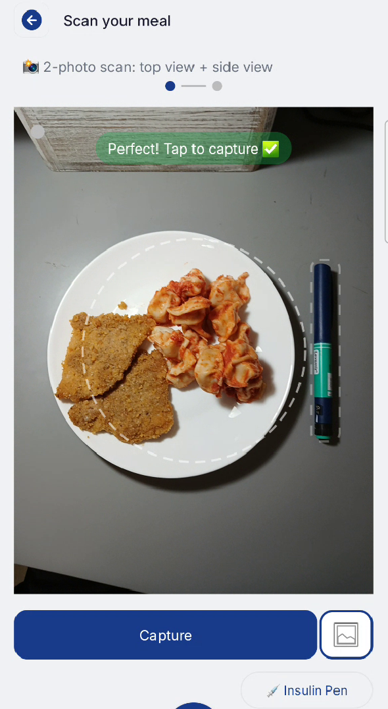
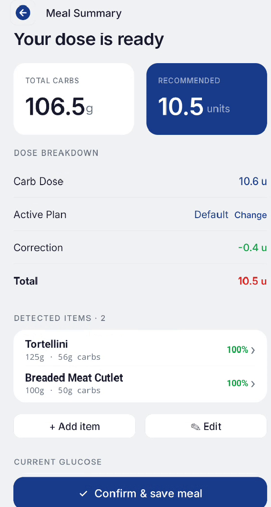
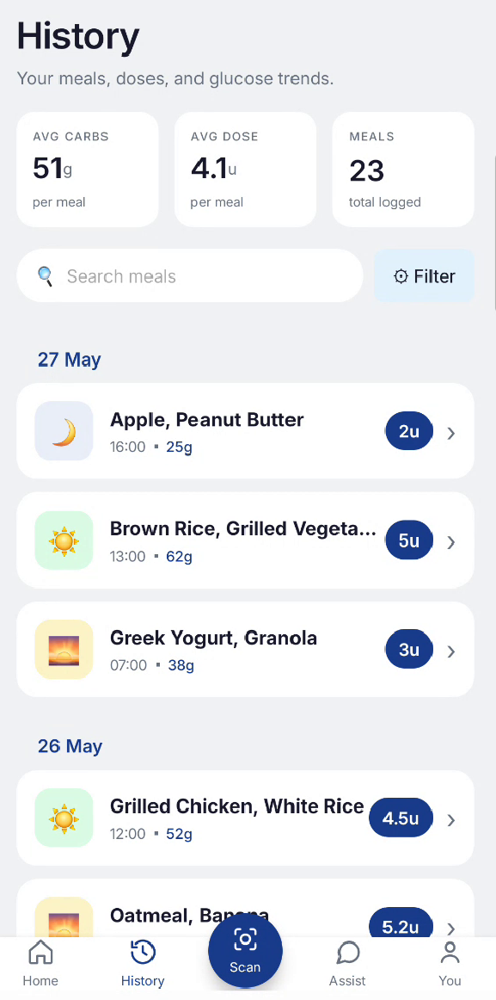

A native Kotlin Android application that guides the user from meal photo capture through carb estimation to insulin dose display.
Watch the complete InsuScan flow - from capturing a meal to reviewing the carbohydrate estimate and recommended insulin dose.
The main InsuScan screens guide the user from meal capture, through carbohydrate analysis, to reviewing previously scanned meals.



The scan flow is the app's primary use case. It is orchestrated by ScanFlowController, ScanHardwareController, and ScanPipelineManager - three classes that divide responsibilities between UI flow, hardware management, and server communication.
A dialog presents three options: Insulin Pen (16.0 × 2.0 cm), Credit Card (8.56 × 5.398 cm), or None. The selected type is passed to the server as a query parameter on the scan request. Selecting "None" is supported but produces lower-accuracy results (the pipeline falls back to a plate-size estimate for calibration).
The camera preview runs a live quality analysis loop through CameraCoachEvaluator, which produces a CameraCoachState on every frame. The state controls a coaching pill overlay and the capture button:
| State | Message | Can Capture? |
|---|---|---|
| LevelPhone | Hold phone flat above the plate 📐 | No |
| FindPlate | Center the plate in the frame 🍽️ | No |
| PlaceRefObject | Place [ref] next to the plate 💡 | Yes (tip only) |
| ImproveQuality | [specific issue] | No |
| ForceCapture | Quality is OK - tap to capture ⚠️ | Yes |
| CaptureWithWarning | [borderline message] | Yes |
| Ready | Perfect! Tap to capture ✅ | Yes |
ForceCapture state is emitted. This prevents the user from being permanently blocked by marginal quality issues - the system prioritises getting a usable result over waiting for perfect conditions.
After the top photo is captured, the pipeline manager always requests a side photo on the first invocation. The UI switches to side-camera mode with its own coaching states: SidePhotoNeedTilt (waiting for the user to angle the phone) and SidePhotoReady (angle is good, ready to capture).
The user can skip the side photo, in which case the top image is reused as the side image to satisfy the server's two-image contract. This produces lower height accuracy but keeps the flow unblocked.
ScanPipelineManager.runAnalysis() uploads the top image, side image, reference type, user email, and optional ARCore depth data to POST /vision/v2/scan via Retrofit. The server runs the full 11-stage pipeline and returns a MealDto which is mapped to a local Meal object.
The result is routed through handlePipelineResult() which distinguishes four outcomes: Success (proceed to summary), NeedSidePhoto (switch to side-camera mode), NoFoodDetected (show error dialog), and Failed (show error with details from the structured API exception).
The summary screen shows each detected food item, its estimated weight and carbs, the total carb count, and the recommended insulin dose after pen-step rounding. The user can optionally enter their current blood glucose for a correction dose. After review, the user confirms the meal, which transitions it from PENDING to CONFIRMED via the server API.
The primary input method. Uses CameraX for the preview and capture. The live preview runs continuous image quality analysis - plate detection, reference object detection, blur check, and lighting assessment. Device orientation is monitored to enforce the flat-above-plate requirement for the top photo and the side-angle requirement for the side photo.
Users can also import a photo from their gallery via Android's photo picker (PickVisualMedia). Gallery images bypass the live coaching flow - the reference type is set to "NONE" and the side-photo step is skipped. This provides a quick path for users who already have meal photos.
ARCore is declared as optional in the Android manifest. On supported devices, it provides a depth point cloud that is serialised as JSON and sent alongside the meal photos.
The ArCoreManager class handles the ARCore session lifecycle. When depth data is available, it is captured at the moment of the top-view photo and stored as an ArcoreDepthData JSON payload. The server's Stage 7 (ARCore Depth Fusion) integrates this data into the pipeline when present, or skips the stage entirely when it is not.
This design means the app works on any Android device with a camera, while automatically leveraging hardware depth sensing when the device supports it - no user configuration required.
The profile screen is managed by ProfileFragment with helper classes for data, images, and UI.
Name, email (from Firebase Auth / Google Sign-In), age, gender, and a profile photo (uploadable or from Google account). Editable inline with validation.
Managed via InsulinPlanViewManager. Users create, edit, and delete plans. Each plan has a name, ICR, ISF, and target glucose. One plan is marked as default. Plans are synced to the server on every edit.
Profile data is stored locally via UserProfileManager (SharedPreferences) and synced to the server via PUT /users/{systemId}/{email}. The ProfileDataHelper.buildUserDto() normalises ICR to "1:x" format before sending.
The client uses a sealed exception hierarchy for type-safe error handling across the app.
ApiException is a sealed class with typed subclasses for every failure mode: Unauthorized (session expired), NotFound (resource missing), ServerError (5xx), Timeout, NoConnection, EmptyResponse, and ClientError (4xx). Each carries a user-facing message.
The server's GlobalExceptionHandler ensures HTTP error responses contain clear, structured messages that the client can display directly.
InsulinException is a separate sealed hierarchy for medical/calculation failures: MissingICR, MissingISF, MissingMedicalProfile, NoActivePlan, InvalidGlucose, NegativeCarbInput, ZeroICR, and CalculationFailed. Each produces a specific, actionable error message.
The app follows a single-Activity architecture with Fragments managed by Navigation Component.
| Package | Responsibility |
|---|---|
| scan | Scan flow, pipeline, camera coaching |
| profile | User profile, insulin plans, helpers |
| summary | Dose display, pen-step rounding |
| camera | CameraX, image validation |
| ar | ARCore session management |
| network | Retrofit, DTOs, repositories |
| auth | Firebase Auth, Google Sign-In |
| analysis | OpenCV reference detection (client-side) |
| home | Home screen, plan selection |
| utils | Shared helpers, exceptions |
The app uses a design system internally called "Clinical Sanctuary" - a clean, clinical aesthetic built around navy blue as the primary colour, the Inter font family, and generous whitespace. The design prioritises clarity and trust over visual complexity, reflecting the medical nature of the app's purpose.
UI components include a custom top bar via TopBarHelper, consistent row-based profile editing, a coaching pill overlay during scanning, and toast-based feedback via ToastHelper.
While the server handles the authoritative calibration, the client also runs lightweight OpenCV-based reference detection during the live camera preview - purely for coaching purposes.
The analysis.detection package implements a strategy pattern for reference object detection. CardReferenceStrategy evaluates contours by aspect ratio (1.2–2.2), rectangularity (≥ 0.75), and optionally applies a homography estimate for tilted cards (reaching 0.97 confidence). The pen strategy uses contour-based fragment clustering.
These client-side detections feed the camera coaching system: when the user has selected "Insulin Pen" and the pen is not visible in the preview, the coaching pill shows "Place insulin pen next to the plate." The actual calibration for measurement purposes always happens server-side with the full CV-first, Gemini-fallback chain.